Weakly Supervised Ridge SegmentationJuly 19, 2020
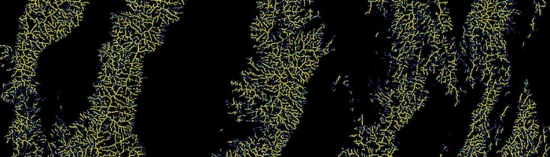
Deep Learning on Map TilesSeptember 1, 2018
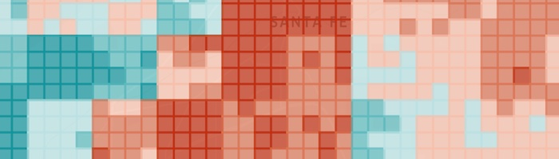
The Ultimate Climbing RoadtripsJuly 16, 2016
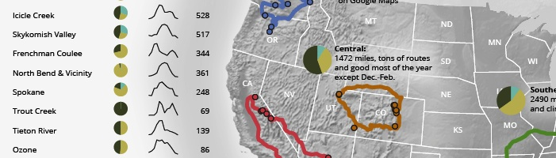
Risk in North American MountaineeringMay 19, 2016
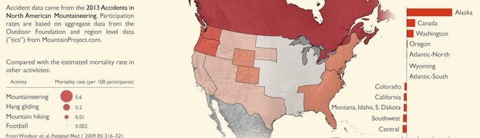
Accidents in North American MountaineeringFebruary 26, 2016
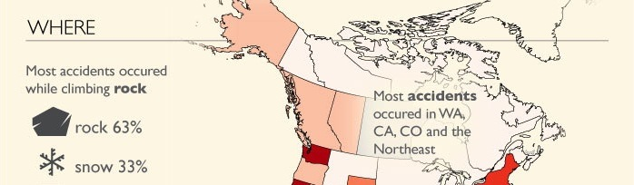
myTracksFebruary 23, 2016
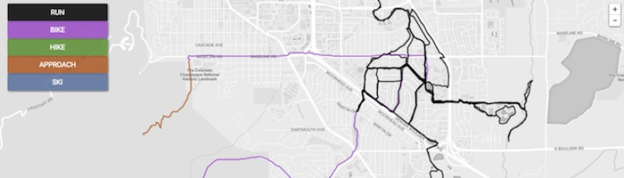
NYC Open Data January 22, 2016
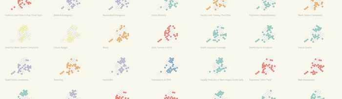
Open Trail Map November 28, 2015
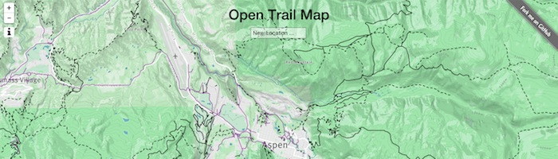
D3 Hexbins over a Shaded Relief AlbersUS Map October 26, 2015
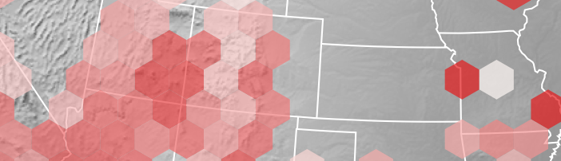
Data Sources: Motion Tracking September 28, 2015
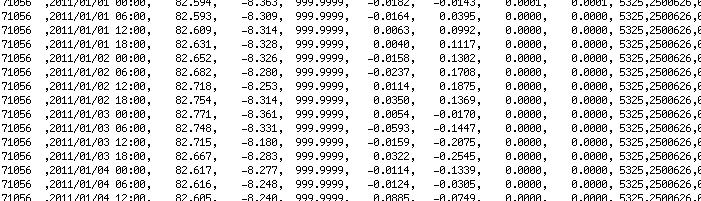
The New Site August 12, 2015
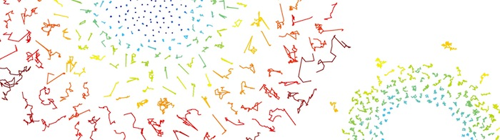